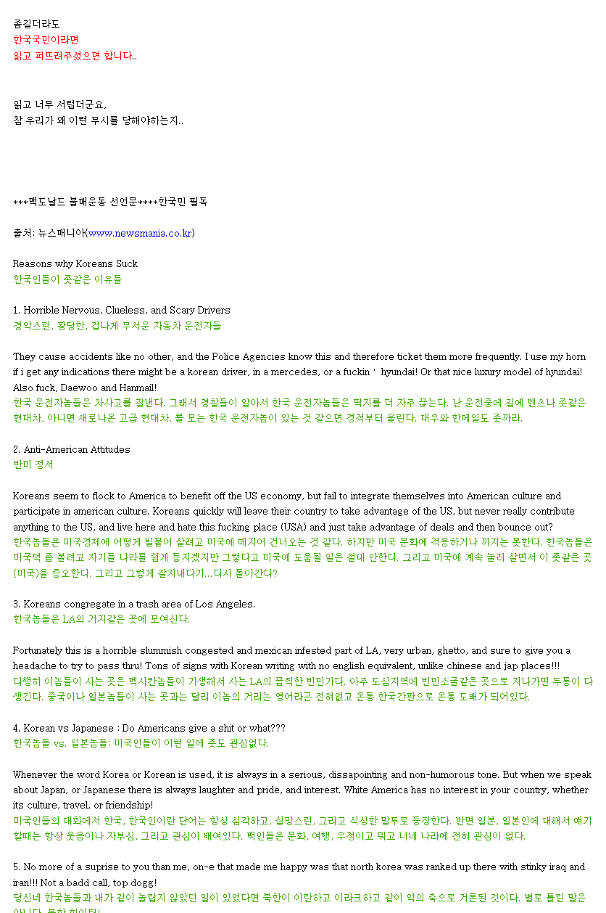
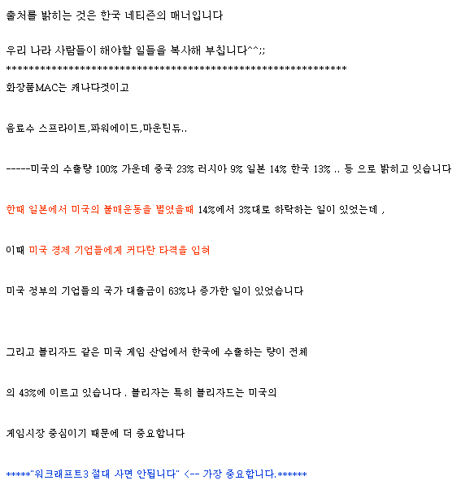

오랜만에 예전에 운영했던 블로그 보다가 글이 신선하고 웃퍼서 발골해옴
대략 시기는 2002~2007년 쯤 되는 듯
뭐 대충 내용은 한국인들은 운전사고 잘치고
반미사상 오지는데, 미국 경제에 빌붙어 다님
미국문화에는 적응 못함
멕시칸들이나 기생하는 가난한 LA에 뭉텅이로 살고 있음
백인들은 한국에 관심도 없고 말투 노답임
중고 벤츠 겁나 좋아한다
근데 저거 쓴 원작자가 누군지 찾아볼려 해도 지금으로선 알 수가 없음;;

원작자가 출처 남기라고 해서 아래 남겨봄
출처 Link (원글은 삭제 됐는지 없음)
이번에 wow 포에버 나왔던거 같은데 하면 안 됨 ㅇㅇ;;
밑으로 블라블라 뭐 이것저것 구매하지말라 글
...? ㄹㅇ 이런 말을 하셨읍니까...?
gpt로 찾아보니 2002년도 안톤 오노 경기 때문에 반미 감정 크게 올라가면서 그런거 같음
신기한건 미국을 혐오하던 시기도 있었던게 신기하고 아 그때 그랬지 했음...
ㅋㅋㅋㅋㅋㅋㅋㅋ